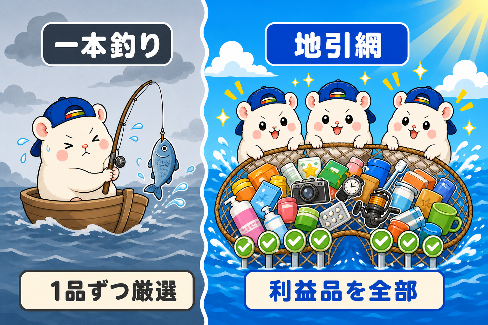
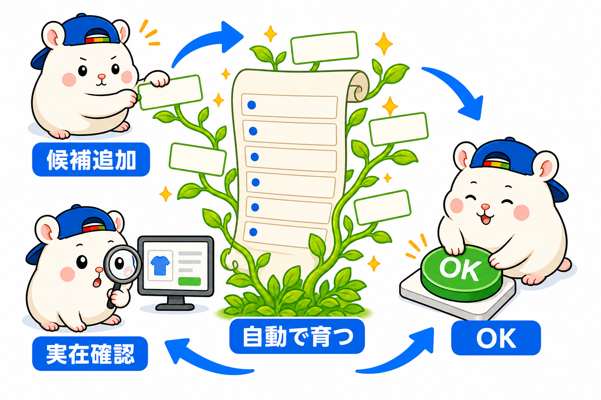

eBayは2度目の挑戦です。
前回のeBayでは、外注さんが21名いました。
そのうち18名は、リサーチ担当です。
外注費は毎月30万円台。
今日は、そのリサーチをやめた話です。
出品すればするほど人件費が増える
外注さんへの報酬は、出来高制でした。
1品出品するごとに、いくらの世界。
eBayはただしい出品をしていれば、出品すればするほど販売数が増えます。
でも、出品すればするほど、報酬も増えます。人件費が増えていくわけです。
だから「正しい出品」だけを外注さんに要求します。
eBayでSold履歴があって、競合品よりも安く出品できるか?
こういった制限を加えて、リサーチをしてもらっていました。
AIには、この前提がありません
いまのぼくの店のリサーチ担当は、AIです。
1品出しても、100品出しても、報酬はゼロ。
だとしたら、選び抜く理由って、なんでしょう?
ないんですよ。
だから、戦い方ごと変えました。
キーワードリストを起点に、仕入元の棚をしらみつぶしに判定して、利益が出る形で出品できる物を、全部出品する。
売上は、網にかかった分を拾う。
イメージは地引網です。
1本の釣り竿で当たりを狙うのをやめて、網を広げて拾い上げる。

「雑に出す」とは違います
誤解しないでほしいのですが、地引網は雑に出すことではありません。
利益計算は、全品やります。1品ずつです。
サイズと重さを調べて、梱包後のサイズに直して、国際送料を見積もって、手数料と関税を見込んで、仕入値を引く。
そして、利益率5%以上かつ1,500円以上を満たさなければ、出さない。
昔、外注さんが1品ずつやっていた計算と、同じ中身です。
同じことを、AIが全品にやる。
それだけの話なんです。
リストは「書くもの」から「育つもの」になった

「キーワードリストを作って維持するのが大変そう」
そう思いますよね。
うちのリストは、自動で育っています。
知っているブランドの知らない型番は、AIが仕入元の棚を見て、勝手にリストへ追加候補にする。
知らないブランドは、eBayに実際に出品があるものだけ、候補として報告してくる。
ぼくはOKを出すだけです。
この仕組みを入れる前、うちの店では仕入元の新着の約3割が「リストにない」という理由だけで捨てられていました。
粗利2万円級の優良品も、ぼくがURLを投げるまで出なかった。
いまは、ぼくが見つける前に店が出しています。
黄金律だけは、昔のまま
ひとつだけ、外注時代から変わらないルールがあります。
利益品のまわりには、利益品がある。
1品売れたら、そのブランドごとキーワードリストに昇格させて、棚ごと網に足す。
1品当たったら関連品を1個ずつ調べる、ではなくて、棚ごとです。
網は、こうやって広がっていきます。
まとめ
- 厳選リサーチの正体は、人件費だった
- AIは報酬ゼロ。だから厳選をやめて、地引網にした
- ただし利益計算は全品1品ずつ。フロアを割る物は出さない
- リストは自動で育つ。ぼくはOKを出すだけ
- 当たりが出たら、棚ごと網に足す
このリサーチの組み方は、「AI × eBay輸出の教科書」に、発注文ごと全部書きました。
記事の下にある案内から読めます。
あなたのリサーチは、釣り竿ですか? 網ですか?
▼チャムのeBay輸出店の実録🐹
https://note.com/cham_ebay
▼ブログ(レンスペ×eBay、全記事まとめ)
https://rental-space.net
▼この店のやり方は、ぜんぶ1冊にまとめてあります
リサーチ・出品・値付け・顧客対応まで、初月利益18万6,673円を出した実店舗の記録と手順を全部書いた教科書です。
読んだその日から、AI社員の作り方をそのまま真似できます。
『AI × eBay輸出の教科書 — 梱包以外、ぜんぶAI』(9,800円)
https://brmk.io/pqk3UP
※20部売れたら、14,800円に値上げします。